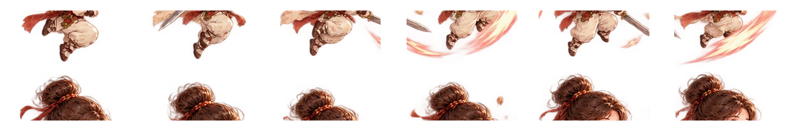

MOVEMENT
WASD 移动
方向键同样可用。横版战斗以平地推进为主。
正在准备游戏…
五行入山海，各赴一程。
角色 · 怪物 · Boss · 装备 · 五行 · 攻略
查看已收录角色的定位、技能与战斗特征。
直接点击场景中的木鱼、聚灵阵、药圃、丹炉、藏经阁、灵泉与静修台进入对应洞府功能。
四脉归心 · 循序点亮
按键 · 动作预览 · 战斗机制
方向键同样可用。横版战斗以平地推进为主。
J-J-J，第三段硬直更强。

空中再次按 K 触发第二段。
位移并可取消部分攻击后摇。
近身范围斩击。
中距离牵制。
积蓄能量后释放爆发。
只有 active 阶段的 hitbox 命中才会造成伤害；身体接触默认不扣血。
伤害判定与角色身体碰撞分离。
克制约 1.25×，被克约 0.85×，保持温和，不制造强制卡关。
统一游戏 HUD · 画质 · 音频 · 存档
逻辑分辨率固定 1920×1080，内部渲染倍率结合设备与画质档调整。
正在检测存档方式…
BAT 模式保存到 saves/save_v5.json，写前自动备份为 save_v5.backup.json。浏览器模式退出前建议导出 JSON。